#woodworks:leaf_piles
物品标签 · 27 个已收录成员
标签成员 (27)
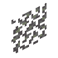
花梨木树叶堆atmospheric:rosewood_leaf_pile
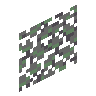
酸枝树叶堆atmospheric:morado_leaf_pile
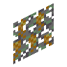
开花酸枝树叶堆atmospheric:flowering_morado_leaf_pile
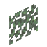
丝兰树叶堆atmospheric:yucca_leaf_pile
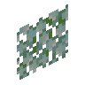
梾树树叶堆atmospheric:kousa_leaf_pile
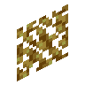
白杨树叶堆atmospheric:aspen_leaf_pile
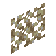
绿色白杨树叶堆atmospheric:green_aspen_leaf_pile
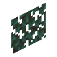
阴郁木树叶堆atmospheric:grimwood_leaf_pile
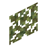
月桂树叶堆atmospheric:laurel_leaf_pile
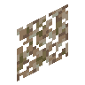
干燥月桂树叶堆atmospheric:dry_laurel_leaf_pile
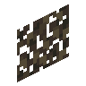
醋栗树叶堆atmospheric:currant_leaf_pile
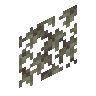
Pile of Maple Leavesautumnity:maple_leaf_pile
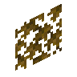
Pile of Yellow Maple Leavesautumnity:yellow_maple_leaf_pile
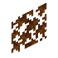
Pile of Orange Maple Leavesautumnity:orange_maple_leaf_pile
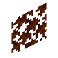
Pile of Red Maple Leavesautumnity:red_maple_leaf_pile
 柳树树叶堆
柳树树叶堆environmental:willow_leaf_pile
 松树树叶堆
松树树叶堆environmental:pine_leaf_pile
 紫藤树叶堆
紫藤树叶堆environmental:wisteria_leaf_pile
 粉红色紫藤树叶堆
粉红色紫藤树叶堆environmental:pink_wisteria_leaf_pile
 蓝色紫藤树叶堆
蓝色紫藤树叶堆environmental:blue_wisteria_leaf_pile
 紫色紫藤树叶堆
紫色紫藤树叶堆environmental:purple_wisteria_leaf_pile
 白色紫藤树叶堆
白色紫藤树叶堆environmental:white_wisteria_leaf_pile
 李树树叶堆
李树树叶堆environmental:plum_leaf_pile
 明朗李树树叶堆
明朗李树树叶堆environmental:cheerful_plum_leaf_pile
 阴沉李树树叶堆
阴沉李树树叶堆environmental:moody_plum_leaf_pile
 木槿树叶堆
木槿树叶堆environmental:hibiscus_leaf_pile
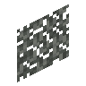
桑树树叶堆upgrade_aquatic:river_leaf_pile
使用该标签的配方
无